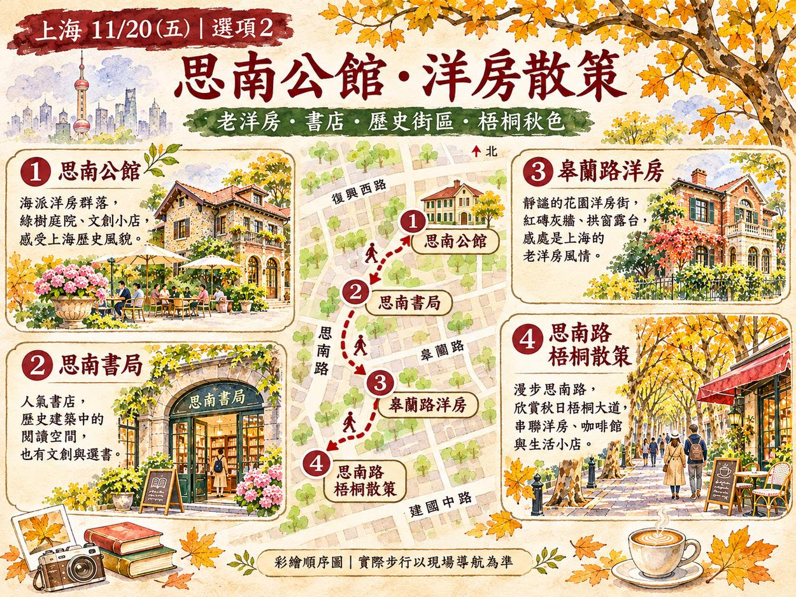
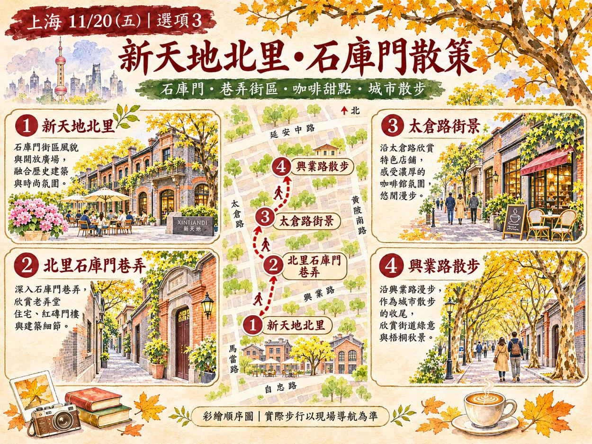
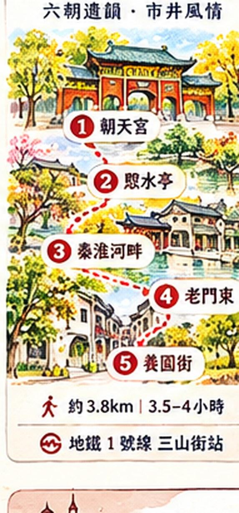
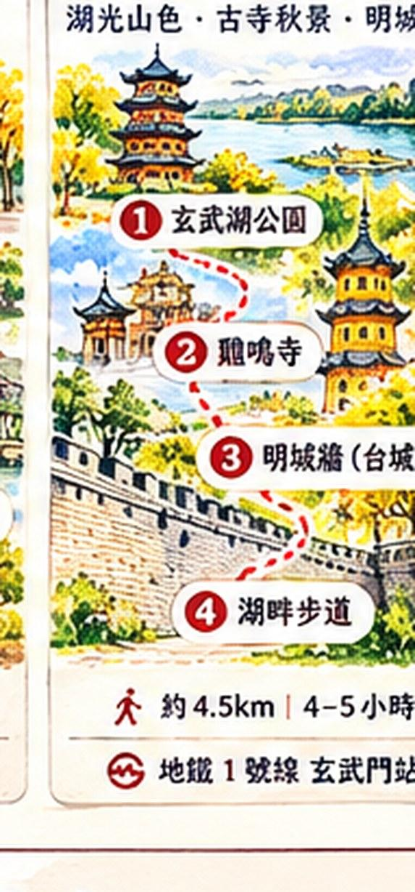
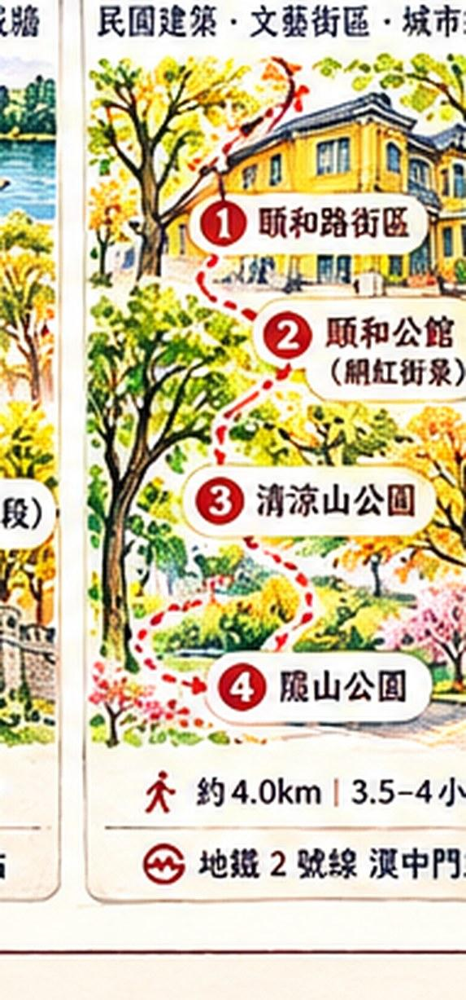
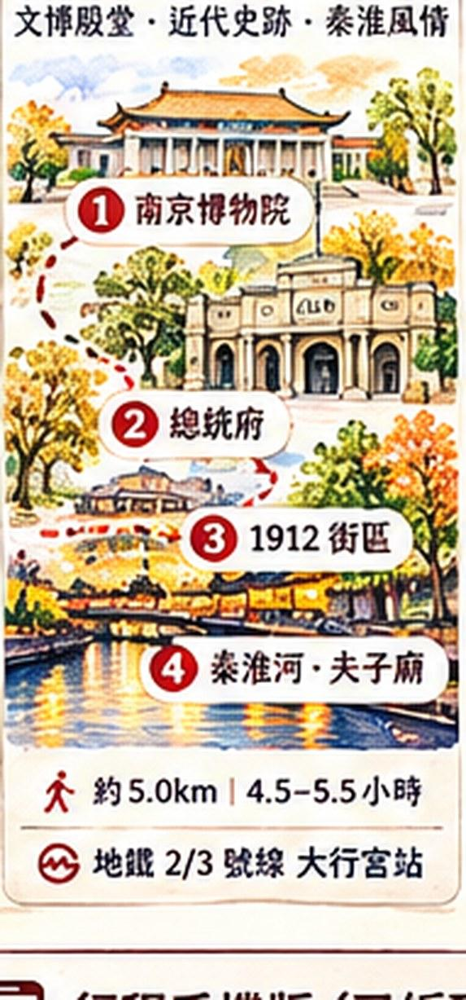

🍁 18 條現場路線
直接按日期和景區名稱開啟，先看當日路線圖，接著查交通、餐食、拍照與探店。
11/19｜上海抵達・浦東入城 水彩候選圖・地理位置待校核點開看彩繪路線・餐飲・拍照・活動探店11/20｜武康路・安福路
水彩候選圖・地理位置待校核點開看彩繪路線・餐飲・拍照・活動探店11/20｜武康路・安福路 核准原圖點開看彩繪路線・餐飲・拍照・活動探店11/20｜思南公館
核准原圖點開看彩繪路線・餐飲・拍照・活動探店11/20｜思南公館
水彩候選圖・地理位置待校核點開看彩繪路線・餐飲・拍照・活動探店11/20｜新天地北里
水彩候選圖・地理位置待校核點開看彩繪路線・餐飲・拍照・活動探店11/20｜上生新所 水彩候選圖・地理位置待校核點開看彩繪路線・餐飲・拍照・活動探店11/20｜愚園路・靜安寺
水彩候選圖・地理位置待校核點開看彩繪路線・餐飲・拍照・活動探店11/20｜愚園路・靜安寺 水彩候選圖・地理位置待校核點開看彩繪路線・餐飲・拍照・活動探店11/20｜上海植物園
水彩候選圖・地理位置待校核點開看彩繪路線・餐飲・拍照・活動探店11/20｜上海植物園 水彩候選圖・地理位置待校核點開看彩繪路線・餐飲・拍照・活動探店11/20｜豫園・九曲橋・城隍廟
水彩候選圖・地理位置待校核點開看彩繪路線・餐飲・拍照・活動探店11/20｜豫園・九曲橋・城隍廟 水彩候選圖・地理位置待校核點開看彩繪路線・餐飲・拍照・活動探店11/21｜朝天宮・老門東
水彩候選圖・地理位置待校核點開看彩繪路線・餐飲・拍照・活動探店11/21｜朝天宮・老門東
水彩候選圖・地理位置待校核點開看彩繪路線・餐飲・拍照・活動探店11/22｜玄武湖・雞鳴寺・明城牆
水彩候選圖・地理位置待校核點開看彩繪路線・餐飲・拍照・活動探店11/23｜頤和路・清涼山
水彩候選圖・地理位置待校核點開看彩繪路線・餐飲・拍照・活動探店11/24｜陵園路・美齡宮・明孝陵 水彩候選圖・地理位置待校核點開看彩繪路線・餐飲・拍照・活動探店11/25｜中山陵・音樂台・靈谷寺
水彩候選圖・地理位置待校核點開看彩繪路線・餐飲・拍照・活動探店11/25｜中山陵・音樂台・靈谷寺 水彩候選圖・地理位置待校核點開看彩繪路線・餐飲・拍照・活動探店11/26｜棲霞山
水彩候選圖・地理位置待校核點開看彩繪路線・餐飲・拍照・活動探店11/26｜棲霞山 水彩候選圖・地理位置待校核點開看彩繪路線・餐飲・拍照・活動探店11/27｜南京博物院・總統府・秦淮
水彩候選圖・地理位置待校核點開看彩繪路線・餐飲・拍照・活動探店11/27｜南京博物院・總統府・秦淮
水彩候選圖・地理位置待校核點開看彩繪路線・餐飲・拍照・活動探店11/28｜南京彈性行程 水彩候選圖・地理位置待校核點開看彩繪路線・餐飲・拍照・活動探店11/29｜南京返回上海龍陽路
水彩候選圖・地理位置待校核點開看彩繪路線・餐飲・拍照・活動探店11/29｜南京返回上海龍陽路 水彩候選圖・地理位置待校核點開看彩繪路線・餐飲・拍照・活動探店11/30｜龍陽路至浦東機場
水彩候選圖・地理位置待校核點開看彩繪路線・餐飲・拍照・活動探店11/30｜龍陽路至浦東機場 水彩候選圖・地理位置待校核點開看彩繪路線・餐飲・拍照・活動探店
水彩候選圖・地理位置待校核點開看彩繪路線・餐飲・拍照・活動探店